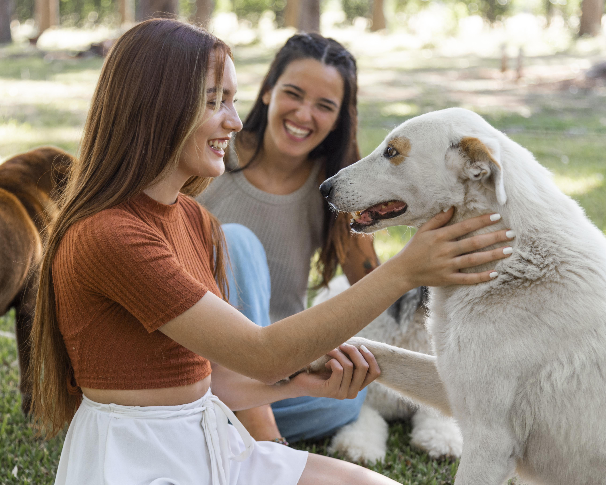
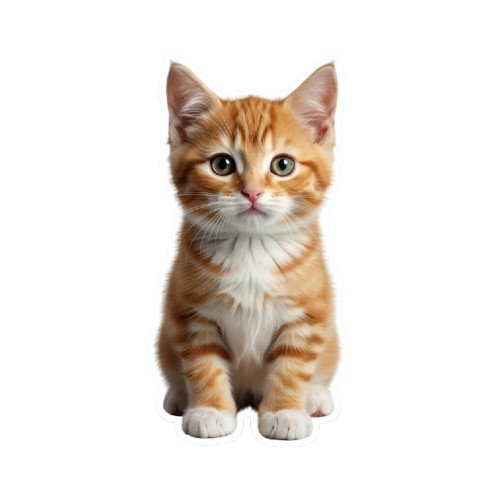
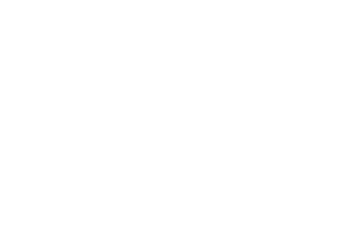
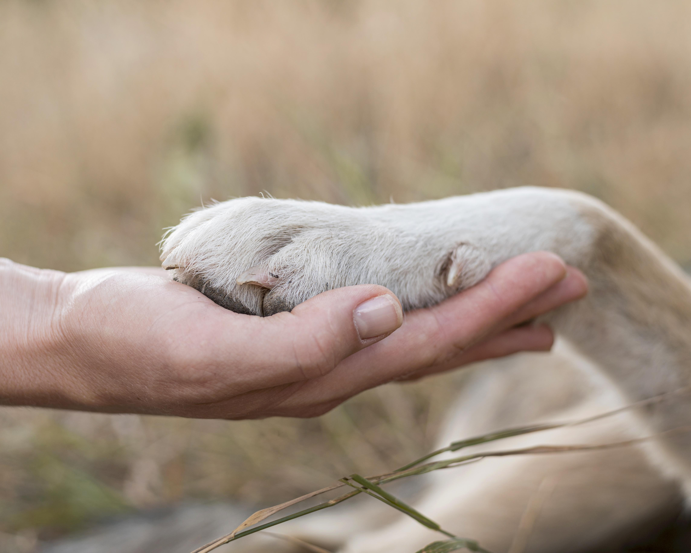
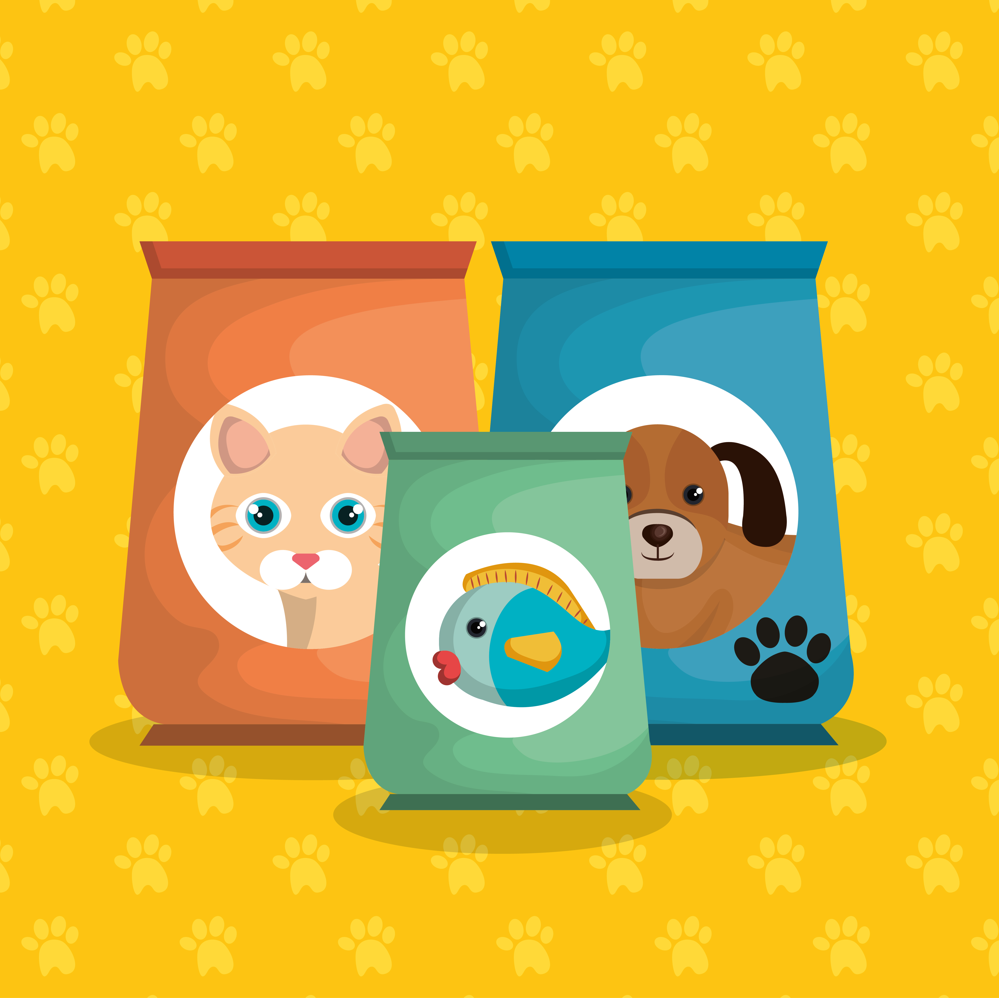
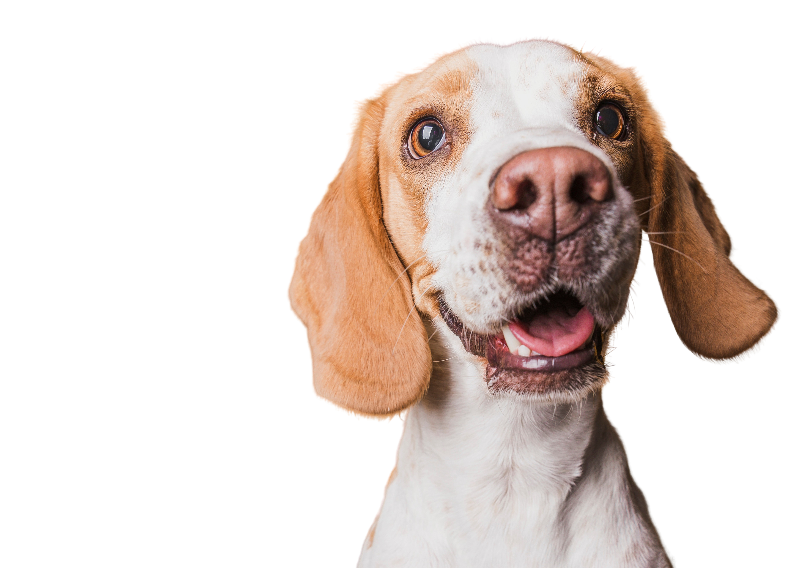
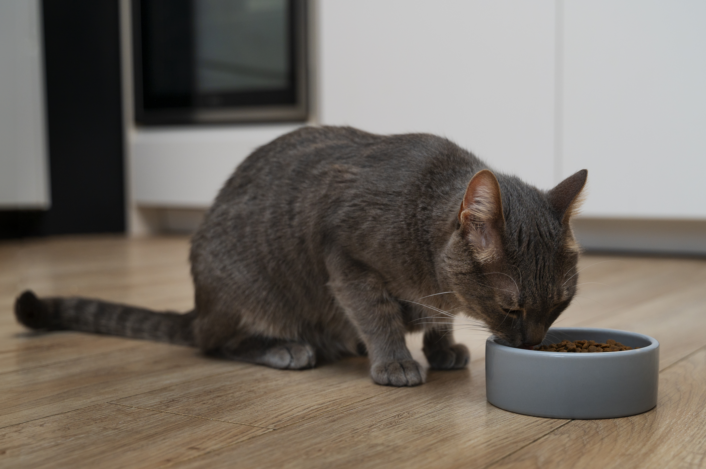

Projeto Anjos de Patas
VoluntariadoDedique algumas horas semanais para socializar, alimentar e dar carinho aos resgatados.


Somos uma organização dedicada à inclusão social e ao atendimento de famílias. Junte-se a nós e faça a diferença!
Quero Ser VoluntárioMilhares de animais nas ruas dependem da sua ajuda. A ONG Cruzeiro do Sul trabalha resgatando, reabilitando e encontrando lares seguros para cães e gatos.
Seu tempo e sua doação são o combustível da nossa missão. Junte-se aos Anjos de Quatro Patas!


Dedique algumas horas semanais para socializar, alimentar e dar carinho aos resgatados.

Nossa campanha permanente de arrecadação de ração para filhotes e animais idosos.

Veja os animais disponíveis para adoção responsável. Filtre por porte, idade e temperamento.

Doações específicas para custear cirurgias complexas e tratamentos de emergência.
Tire suas dúvidas ou agende uma visita ao nosso abrigo.
Endereço: Rua da Esperança, 123 - Cidade Amiga/SP
Telefone: (99) 99999-9999
E-mail: contato@cruzeirodosul.org
Visitas apenas com agendamento prévio.
Somos uma organização sem fins lucrativos que atua no atendimento de famílias em inclusão social, promovendo dignidade, esperança e oportunidades para quem mais precisa.